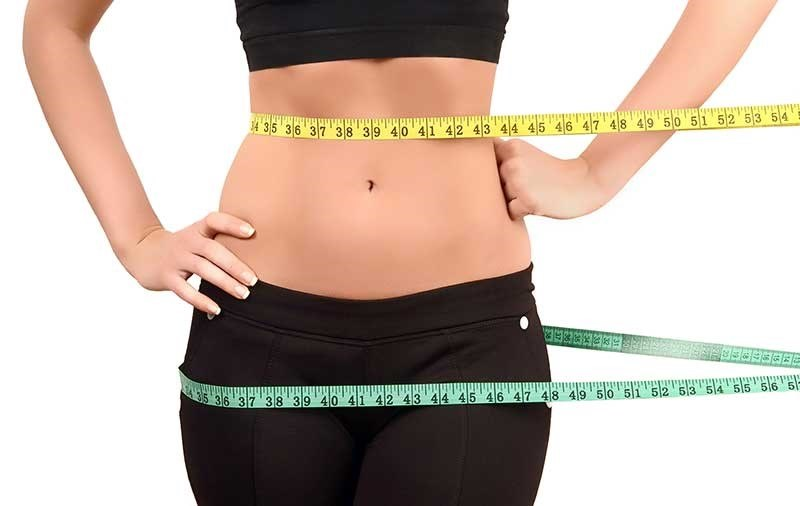
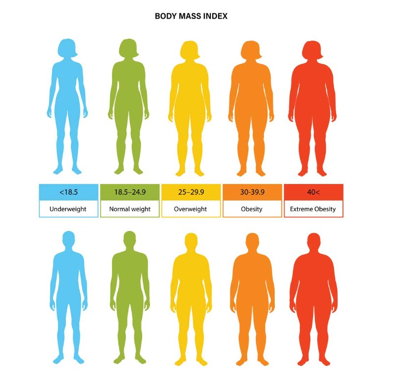
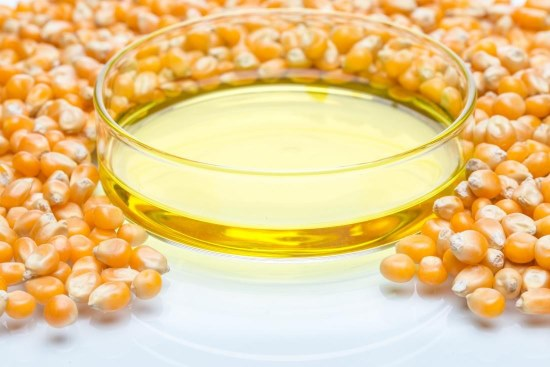
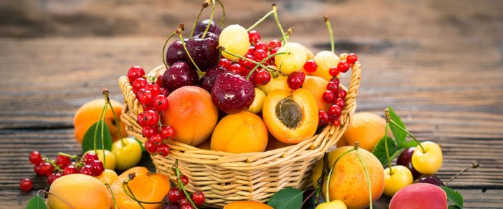

BESLENMEDEKİ GİZLİ TEHLİKELER
Siz değerli sağlık bülteni okurlarına beslenmedeki gizli tehlikelerden bahsetmeyi seçmemdeki asıl amaç obezitenin ülkemizde ve dünyada çığ gibi büyüyerek ilerlemesidir.
Beslenme yaşam faaliyetlerimizin devamı için gerekli olan enerjiyi, vitaminleri ve mineralleri elde etmek için yaptığımız bir faaliyettir desek yanlış olmaz.
İnsan nüfusunun artması beslenme ihtiyacının artmasına yok açmıştır. Sanayileşme ile artan beslenme ihtiyacına cevap verebilmek için insan sağlığına zarar veren birçok uygulama hayata geçmiştir. (Ucuz hammadde arayışları (fruktoz şekeri), gıdaların renkleri, raf ömürleri vb. problemlerine karşı gıdalara pek çok katkı maddeleri katılması, trans yağlar vb.)
Obezite Nedir?
nsan vücudunda yağ kütlesi miktarının kemik, kas ve su gibi diğer bileşenleri içeren yağsız kütleye göre aşırı miktarda artmış olması durumudur.
Obezite vücut yağ kitlesi artması sonucu birçok hastalık içinde risk faktörüdür.
Ağrımızın olması veya ateşimizin çıkması vücudumuza ait sinyallerdir ve bir şeylerin ters gittiğini bize anlatır. Yağ dokusunun artışı da tıpkı ağrı veya ateş gibi vücudun ters giden bir duruma karşı bize verdiği bir sinyaldir.
Obezite Değerlendirmesi Parametreleri
Bel/kalça oranının kadınlarda ≥ 0.85 ve erkeklerde ≥ 0.90 cm üzerinde olması tüm sağlık problemlerinin görülme riskini artıran bir faktör olarak değerlendirilmektedir.
Bel çevresi erkeklerde 94 cm'nin, kadınlarda 80 cm'nin altındaysa normal olarak kabul edilirken 94-102 cm arasındaki erkekler fazla kilolu, 102 cm ve yukarındakiler şişman sınıfına girmektedir. Kadınlarda ise 81-89 cm arasındakiler fazla kilolu grupta iken 89 cm'yi geçenler şişman olarak kabul edilmektedir.
Bel / boy oranı da önemli bir parametre olarak kullanılmaktadır. Kişinin bel çevresinin boy uzunluğuna bölünmesi ile elde edilen sonuç 0,5 değerinden küçük olmalıdır
Vücut kitle İndeksi
Vücut kitle endeksi (BMI) hesaplamak için aşağıdaki formülü kullanabilirsiniz:
BMI = kilogram cinsinden ağırlık / metre cinsinden boyun karesi
Örneğin, 70 kilogram ağırlığı ve 1.75 metre boyu olan bir kişinin BMI değeri şu şekilde hesaplanabilir:
BMI = 70 / (1.75 x 1.75) = 22.86
Bu kişinin BMI değeri normal aralıkta (18.5-24.9) olduğundan, sağlıklı bir vücut ağırlığına sahip olduğu söylenebilir.
Obezite Hangi Hastalıklar için Risk faktörüdür?(4)
- Hipertansiyon
- Yüksek LDL, düşük HDL veya yüksek Trigliserit
- Tip2 diyabet (Şeker Hastalığı)
- Koroner Kalp Hastalığı
- Felç
- Safra kesesi rahatsızlığı
- Osteoartrit
- Uyku apnesi
- Düşük yaşam kalitesi
- Depresyon, anksiyete
- Vücut ağrısı ve işlevsellikte zorluk
- Birçok kanser türü içinde artmış risk (2)
Dünya Sağlık Örgütü'ne (WHO) göre her yıl 4 milyon kişi obezite nedeniyle ölüyor.
İstatistikler
DSÖ 2022 Obezite raporunda Avrupa bölgesinde Türkiye 1. Sırada yer almaktadır.
2022 Avrupa Obezite Raporunda Türkiye'deki yetişkinlerin yaklaşık yüzde 32,1'inin obezite pandemisinin etkisi altında olduğu bildirildi.
Dünya Sağlık Örgütü verilerine göre dünya çapında 1 milyardan fazla insanda obezite var. Bu sayının korkutucu yanı 340 milyonunun ergenlerden, 39 milyonunun çocuklardan oluşuyor olmasıdır.
Dünyada obezite salgını giderek artarken, bu salgından çocuklar ve gençlerin etkilenme oranı da aratarak devam etmektedir..
Dünya Obezite Federasyonu'nun 2023 atlası, önümüzdeki 12 yıl içinde dünyanın %51'inin, yani 4 milyardan fazla insanın obez veya aşırı kilolu olacağını öngörüyor (1).
Obezite Dünyada ve Ülkemizde Niçin Hızla Artmaktadır?
- Beslenme tercihlerinde işlenmiş gıda tüketimine yönelme
- Artan Hareketsizlik
Sanayileşme ve teknolojiyle birlikte obezite de özellikle son 50 yılda hızla artmıştır.
Gizli Tehlike Fruktoz Şurubu (3)
İnsanlar binlerce yıl boyunca diyetlerinde başlıca kaynağı olan taze meyvelerden sağlanan fruktozu günde ortalama 16–20 gr olacak şekilde tüketmişken, günümüzde alınan enerjinin yaklaşık %15–20’sinin kaynağı, işlenmiş hazır gıdalara eklenen yapay fruktozdur (yaklaşık günde 85–100 gr)
Fruktoz tatlılık düzeyi en yüksek olan karbonhidrattır. Glikoz referans karbonhidrat olarak kabul edilip tatlılık derecesi 100 alındığında fruktozun tatlılık derecesi 173 olarak bulunmuştur.
Doza ve süreye bağlı olarak alınan fruktozun çoğu metabolize edilerek yağ sentezine katılmaktadır.
1960’lı yıllarda sakkaroz üretiminde yaşanan aksaklıklar ve fiyat artışı neticesinde gıda endüstrisine giren, Yüksek Fruktozlu Mısır Şurubu 1980’li yıllarda artık bir çok içecek ve yiyecek maddesinin ana tatlandırıcısı konumuna gelmiştir.
Özellikle Yüksek Fruktozlu Mısır Şurubu uygun fiyatı, sıvı formda oluşu, koruyuculuk özelliği ve yoğun tatlılığı nedeniyle çoğu gıda şirketi tarafından tercih edilen bir kalorili tatlandırıcıdır.
Yüksek Fruktozlu Mısır Şurubu, gıda endüstrisi tarafından, mısır nişastasından üretilen sıvı yapıda glukoz-fruktoz içeren bir tatlandırıcıdır. Sakkaroz, şeker kamışı ve şeker pancarı özünden doğrudan çıkarılan doğal bir ürün olmasına rağmen, Yüksek Fruktozlu Mısır Şurubu oluşumu doğal değildir. Sakkarozun yapısındaki fruktoz ve glukozun her ikiside bitkilerde bulunduğu haliyle doğal yapıda iken, Yüksek Fruktozlu Mısır Şurubu'nun içeriğindeki fruktoz modifiye yapıdadır.
Dünya Sağlık Örgütü (WHO) ve Avrupa Gıda Güvenliği Otoritesi (EFSA) alınan günlük enerjinin ilave şekerlerden gelen oranının <%10 olmasını (6) önermektedir.
43 ülkede kişi başı tüketilen Fruktoz şurubu miktarının analizini yaptıkları bir araştırmada ABD yıllık kişi başına 24.78 kg ile 43 ülke arasında ilk sırada yer almıştır. Aynı çalışmada Avrupa’da kişi başı Fruktoz şurubu tüketim oranlarının, tüm tüketimin 1/3’ü kadarı olduğu gösterilmiştir.
Türkiye kişi başı yıllık 4.20 kg ile 43 ülke arasında 11. sırada yer almıştır.
Fruktoz Şurubunun Sağlığa Olumsuz Etkileri
- Obezite ve Metabolik Sendrom
- Tip2 Diyabet
- Kardiyovasküler Hastalıklar
- Non Alkolik Karaciğer Yağlanması
Gıdalarda Fruktoz Şurubu Var Mı?
Ülkemizde gıdaların etiketlenmesi, Türk Gıda Kodeksi Gıda Etiketleme ve Tüketicileri Bilgilendirme Yönetmeliği’ne göre yapılıyor. 26 Ocak 2017 tarihli yönetmeliğin, Ek 4, Bölüm 1, 7.maddesinde ürünlerdeki şeker türlerinin belirtilme zorunluluğu ile ilgili ifade görülebiliyor. (F) ve (S) ibarelerinin kullanımıyla ilgili düzenlemeye ise 17 Temmuz 2017 tarihinde yayınlanan Türk Gıda Kodeksi Gıda Etiketleme ve Tüketicileri Bilgilendirme Yönetmeliği Kılavuzu’nun 6. Bölüm 4. Maddesinden ulaşılabiliyor. Kılavuzda yer alan ifadeler şöyle:
Bileşiminde şeker veya fruktoz-glukoz şurubu kullanılan bir alkolsüz içecek için:
- Etiketteki İçindekiler bilgisinde “Şeker (S)* veya Fruktoz-Glukoz şurubu (F)*” ifadesinin yazılması,
- İçindekiler bilgisinin sonuna “ *Kullanılan şeker veya fruktoz glikoz şurubu paket üzerine kodlanmıştır” yönlendirici referans cümlenin yazılması,
- Üretim sırasında kullanılan Şeker veya Fruktoz - glikoz şurubuna ait kodun “S” veya “F” olarak ambalaj üzerine kodlanması.
Ancak, mantı için kıyma yerine soya kullanılması, süt kreması/süt tozu yerine kahve beyazlatıcısı kullanılması vb. örnekler gıdanın bileşimini, doğasını veya algılanan değerini değiştireceğinden kodlama yöntemi bu bileşenler için kabul edilemez.
Meyvelerde Bulunan Fruktoz
Birçok çalışma özetlendiğinde sentetik fruktoz yüksek miktarda alındığında bazı olumsuz metabolik etkilere neden olabilmektedir; ancak kaynağı meyve ya da bal olan fruktozun yüksek miktarda tüketiminde bu olumsuz etkiler görülmemekte ya da daha az oluşabilmektedir.
Obeziteden Kurtulmak için Püf Noktalar
Obezite sadece fiziksel görünüşle ilgili bir şey değildir. Metabolizmamızda ters giden şeylerin olduğuna işaret eder. Vücudun dışındaki yağlanma başta karaciğerimiz olmak üzere iç organ ve kalp damarlarında yağlanmamız olabileceği hakkında fikir verir.
Hayatımızı emanet ettiğimiz arabanın bile belli zaman aralıklarında yağı, benzini ,tekerleğin havası vb. kontrollerini ve bakımını yaptırıyoruz. Obezite veya fazla kilolu olmanın taşıdığı bu kadar risk ortadayken bu riskin derecesini ve şiddetini tespit edip aksiyon almamak sadece boş vermişlik, akışına bırakmak, hayat gelsin bildiği gibi demektir.
Obeziteden Kurtulmak İçin;
Obeziteden kurtulmak için profesyonel destek almaktan çekinmeyin. Doktor ve diyetisyen kontrolünde ilerlemek sağlıklı kilo vermek için önemlidir. Doktorunuz gerek gördüğü durumlarda sizi hastanede ileri tetkik ve tedavi için yönlendirebilir. Sağlıklı kilo vermek basit bir süreç değildir.
- Farkındalık ve Motivasyon:
- Obeziteden rahatsızlık duymak; Obezitenin yarattığı fiziksel zorluklardan (eğilmek, yürümek ,merdiven çıkmak) kurtulmak istemek. 18-20 kilo fazlası olan bir kişi her gittiği yere sırtında su damacanasıyla gitmenin verdiği zorluğu yaşar, bu kiloyu vermenin rahatlığı hayatının her anında iyileşme sağlar. Obez kişinin fazla ağırlıkları bel, sırt, diz, ayak eklemlerinin aşırı yıpranmasına, harabiyetine sebep olur.
- Kilo vermekte Zorluk, Kolaylık: Sağlıklı olarak kilo vermek hem çok kolay, hem de çok zordur. Kolaylığı veya zorluğun derecesini kişinin yeme alışkanlıkları ve yaşadığı yaşam düzeni belirler. Uygulanıcak kilo verme planı realiteden uzak olmamalı, Kişinin yaşam düzenine, stres düzeyine uyumlu olmalı ve enerji açığı oluşturabilmeli. Şeker bağımlı veya yağ bağımlı bir beslenme düzeni olan kişilerde günün hangi saati olduğu fark etmeksizin yeme isteği vardır. Yeme saatlerini düzenlemek ve sağlık beslenmeyi yeni yaşam düzeni hale getirmek konusundaki başarı vücut biyomekaniğinin sağlıklı işlemesini sağlayıp kişiyi istenilen sağlık seviyesine taşıyacaktır.
- Sağlık Durumunun Tespiti
- Doktor Muayenesi: Günlük yaşantınızda fazla kilonuzun direkt veya dolaylı olarak yol açtığı sağlık şikayetlerinizin varsa hastalıklarınızın doktorunuz tarafından değerlendirilmesi gereklidir. Sağlıklı kilo verme sürecinde şikayetlerinizdeki artma veya yenilerinin eklenmesi ileri kontrol veya sürecin yönetiminde değişikler gerektirebilir.
- Kan ve İdrar Tetkiki: Kan tetkikleri sonuçları metabolizmanız hakkında bizlere fikir vermektedir. Şeker metabolizması, karaciğer fonksiyonları, böbrek fonksiyonları, demir metabolizması, kansızlıkla ilgili değerler, troid değerleri, vitamin değerleri, mineral değerleri hakkında sürecin başındaki değerler tespit edilmiş olacaktır. Ölçüm sonuçlarınızda normalin dışında ileri değerlendirme gereken bir değer var ise kişi uzman doktor kontrolü için hastaneye yönlendirilebilir.
- İdrar Tetkiki: İdrar tetkiki, böbrekten süzüldükten sonra vücuttan idrara atılması beklenmeyen protein, şeker gibi değerler için bize değerli bilgiler vermektedir.
- Beden Ölçüleri: Vücut kitle indeksi, diyetisyen eşliğinde Biyo-empedans cihazı ile vücudunuzdaki fazla kilonun analizi, Bel çevresi ölçümü, kalça ölçümü değerlerinin kayıt altına alınması kilo verirken vücudun hangi bölümlerinde, yağlardan hangi oranlarda kaybınızın olduğunu değerlendirmeye olanak sağlar.
- Diyetisyen Kontrolü: Sağlıklı olarak kilo vermek için sürdürülebilir olacak şekilde sağlıklı beslenmemizi sağlamak için takibinizi yapacak, önerileride bulunacak, vücut metriklerinizin izlemini yapacak Diyetisyen kontrolü elzemdir.
- Enerji Açığı Oluşturmak: Kilo kaybının temelinde besinlerle günlük alınan enerji, günlük harcanan enerjiden az olduğunda enerji açığı oluşur, bunun sonucunda da kişi kilo kaybetmeye başlar. Sağlıklı kilo vermek tabirinin önemi burada başlar; Günlük ihtiyacınız olan kaloriyi bisküvi yiyerek aldığımızı varsayarsak ve aldığımız enerjiden fazla günlük enerji harcarsak enerji açığı oluşur ve kilo veririz. Bisküvi yiyerek kilo vermiş olduk fakat, hayvansal ve bitkisel gıdalardan almamız gereken vitamin ve mineralleri alamadığımız için sağlık durumumuzda bozulma olacaktır. Bu nedenle enerji açığını oluştururken vücut için gerekli olan her şeyi aldığımızdan da emin olmamız gerekir. Bu noktada günlük diyetinizde enerji açığı oluşturmak için diyetisyeniniz size rehberlik yapacaktır.
- Bağırsak Bakterileri: Vücut mikrobiyotanızın çeşitliliği ve sağlıklı olması sezaryen doğumla mı yoksa normal doğumla mı doğduğunuzdan, yaşadığınız şehirden, kullandığınız antibiyotiklere kadar gider. Bağırsak bakterilerinin çeşitliliğinde ki hakimiyetin sağlığımız üzerinde büyük etkileri vardır.
- Yapılmaması Gereken: Enerji kısıtlaması yapıldığında karbonhidratları tamamen kesip protein ağırlıklı bir diyete geçerseniz faydalı barsak bakterilerinizde ciddi kayıplar olur ve bunun sonucunda sağlık şikayetleriniz oluşmaya başlar.
- Yapılması Gereken İşlenmiş, paketli ürünlerin ve şekerli içeceklerin(özellikle) tamamen kesilmesi sağlığımızın korunması konusunda önemlidir. Enerji açığı oluştuğunda beslenmenizde meyve tüketimi, mevsim yeşilliklerinin tüketimi vücut için gerekli olan vitaminlerin ve minerallerin alınmasının yanında faydalı barsak bakterilerinin beslenmesi ve çoğalması için önemlidir. Barsak bakterileri bizlerin beslenme alışkanlığına göre çeşitlenir ve bağırsak içerisindeki baskınlıkları değişir. Yeme alışkanlıklarımız içerisinde sebze yemekleri ve yeşillik yok ise mutlaka yeme alışkanlarımız içerisine zaman içerisinde katmamız önemlidir, yoksa yemediğimiz sebze ve yeşilliklerin yerine kullanmayı sevmediğimiz bir çok ilaç içmek durumunda kalabiliriz.
- Hareket Etmek, Egzersiz Yapmak: Kilo vermenin temelinde enerji açığı oluşturmak vardır ve bu açığı oluşturmanın temelinde alınan enerjinin, harcanan enerjiden az olması vardır. Teoride kişinin günlük aktivitesine göre yapılan bir beslenmede bu enerji açığı oluşturulduğunda düzenli egzersiz yapmasa da kilo verebilir. Obezitenin gelişmesinde insülin direncinin rolü büyüktür. İnsülin direncinin oluşmasının ana sebebi kötü beslenme ve hareketsizliktir. Pratikte enerji açığı oluşturmak için ve insülin direncini kırmak için egzersiz yapmak oldukça faydalıdır.
- Egzersiz Önerileri: Beslenme konusunda olduğu gibi egzersiz içinde günlük yaşam düzeninize uygun sürdürülebilirliği olan bir aktivite içinde olmak kilo kaybı sürecinin sekteye uğramaması açısından önemlidir. Egzersiz konusundaki planlarınızı doktorunuzla konuşmanız, yapmamanız gereken hareket-egzersizler hakkında bilgi edinmek açısından faydalı olacaktır. Seçenekleri bilgi, beceri, yetenek ve ilgi alanlarınıza göre çeşitlendirebilirsiniz. Açık havada, spor salonunda veya evde yapacağınız aktiviteler bulabilirsiniz.
- Yemek Saatleri: Kilo verirken diyetisyenin sizlere vermiş olduğu diyet planına uyarken yemek saatlerinizi atlamamaya-değiştirmemeye özen gösterin. Yemek saatleri atlandığında o gün hayat kalitenizde, enerjinizde düşme yaşayacağınızdan enerji içeriği yüksek gıdalara yönelip kilo verme süreciniz olumsuz etkilenebilir. Yeme saatlerinizin düzeni aksamadığında enerjinizde düşme beklenen bir durum olmayacaktır, kişi yeni besin arayışı içerisinde de olmayacağından kilo verme sürecinde aksama beklenmemektedir.
Son Söz
Sağlıklı beslenmek, tekrarı olmayacak olan yaşamımızı sevdiklerimizle birlikte daha kaliteli, daha yaşanır hale getirecek yaşam biçimidir.